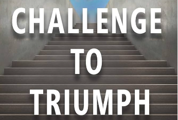

EDUCATION JOURNEY:-

Indroduction:-
Education is a lifelong journey that shapes our understanding of the world, builds character, and equips us with the tools necessary to navigate life's challenges. My own educational history is a tapestry woven with threads of curiosity, perseverance, and the pursuit of knowledge. From the early days of primary school to the current chapter of higher education, each stage has played a pivotal role in shaping my identity and aspirations.
Early Years:-

My educational odyssey commenced in the nurturing environment of primary school. Here, the foundation of my academic journey was laid, and I began to explore the vast landscape of knowledge. The early years were characterized by the joy of discovery, as each day brought new lessons and opportunities to learn. Basic skills in reading, writing, and arithmetic were honed, setting the stage for more advanced academic pursuits in the years to come.
Middle Years:-

Transitioning to middle school marked a significant milestone in my educational journey. The curriculum expanded, introducing subjects like science, history, and foreign languages. This phase was not only about academic growth but also about personal development. The challenges of adolescence were navigated alongside the demands of a more rigorous academic program. It was during these years that I began to recognize my strengths and interests, laying the groundwork for future academic and career choices.
High School:-

High school was a transformative period where academic pursuits gained depth and specialization. The curriculum became more focused, allowing students to delve into subjects aligned with their passions. I found myself gravitating towards certain disciplines that sparked my curiosity and enthusiasm. Extracurricular activities, such as clubs and sports, became an integral part of my education, providing valuable lessons in teamwork, leadership, and time management.
College and Higher Education:-

Entering college marked a transition from the structured environment of high school to the more independent and intellectually challenging realm of higher education. Here, I had the freedom to choose a major aligned with my interests, and the coursework became more specialized. The college years were not only about academic pursuits but also about self-discovery, critical thinking, and the development of a broader worldview.
Challenges and Triumphs:-

No educational journey is without its challenges. From the early struggles with certain subjects to the stress of exams and the inevitable setbacks, each obstacle became an opportunity for growth. The triumphs, both big and small, served as affirmations of dedication and perseverance. The friendships forged, mentors encountered, and lessons learned from failures all contributed to the rich tapestry of my educational history.
Conclusion:-
As I reflect on my educational history, I see a mosaic of experiences that have shaped my intellect, character, and aspirations. Each stage has contributed to my growth, instilling in me a love for learning and a curiosity that propels me forward. Education is not just a series of classes and exams; it is a transformative journey that molds individuals into lifelong learners. My educational history is an ongoing narrative, with each chapter contributing to the person I am today and the person I aspire to become in the future.